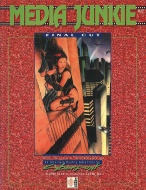

|  | Fiche technique |
| Scénario pour le jeu de rôles Cyberpunk 2020, édité par Ianus Games (Dream Pod 9) (1993) | |
| Langue | Anglais |
| Thème | Alternate Reality : 10 mini-scénarios inspirés de films |
| Qualité du background | 3 / 5 |
| Qualité des scénarii | 4 / 5 |
| Qualité des règles | - |
| Qualité des illustrations | 4 / 5 |
| Qualité de l'écriture | 4 / 5 |
Suite du précédent volume Media Junkie : Take One, ce scénario est en fait une succession d'histoires à thème (le premier volume en comprenait quatre, celui-ci contient les six autres). Un employeur veut récupérer les bandes originales de certains films du 20ème siècle, et le parcours des PJs pour retrouver ces films ressemble étrangement au scénario de ces derniers. Ici, il s'agira de Nosferatu, Cat People, Invasion of the Body Snatchers, Hellraiser, Alien et Night of the Living Dead. Dans ces scénarios, on oscille entre une atmosphère ambigüe et le surnaturel (bonjour monsieur le loup-garou) pur et dur. Les MJ feront le tri, pour ma part je me serai bien passé des garous. Les suppléments Alternate Reality tels que Dark Metropolis, Night's Edge et Grimm's Cybertales sont donc recommandés. L'avantage de la structure de ce scénario, c'est qu'il peut être joué comme une grande campagne, ou comme plusieurs petites histoires séparées.
{kind=link}